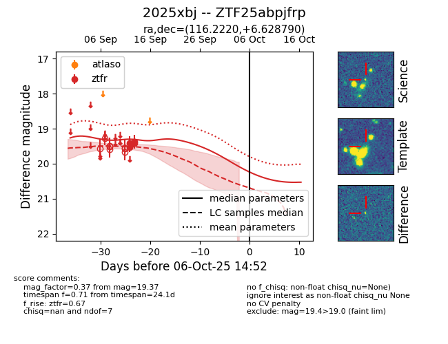
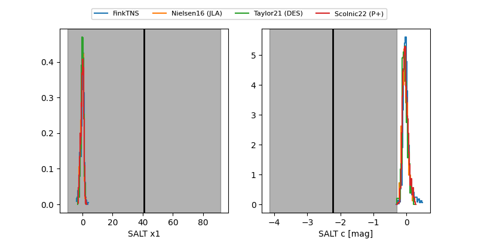

FINK: ZTF25abpjfrp
Lasair: ZTF25abpjfrp
ALeRCE: ZTF25abpjfrp
TNS: 2025xbj
YSE: 2025xbj
ZTF25abpjfrp (ztf,fink)
2025xbj (tns,yse)
equatorial (ra, dec) = (116.2220,+6.62879)
galactic (l, b) = (213.0470,+14.88904)


last ztfr=19.37
4 ztfr detections